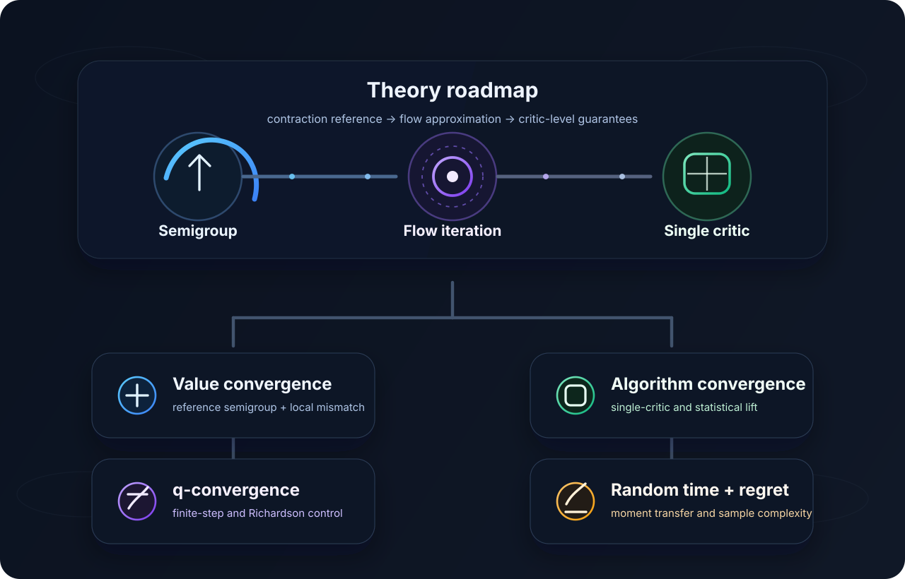

Theory
The theoretical analysis is organized in three layers. First, the ideal Picard-Hamiltonian iteration is studied at the analytic level. Next, finite-horizon and Richardson approximations are inserted to recover model-free learning. Finally, these guarantees are lifted to the practical single-critic implementation of CT-SAC and CT-TD3.

Why compare against a semigroup
The ideal value update in the paper is the Picard-Hamiltonian step
Unlike a discrete-time Bellman operator, this map contains the infinitesimal generator term $L^aV$ and is therefore not a contraction on $(C_b,\|\cdot\|_\infty)$. Instead of forcing a direct analytic contraction argument, the paper introduces a probabilistic dynamic-programming reference operator:
This semigroup is value-only and serves as the contraction anchor for the whole proof strategy. The Picard-Hamiltonian update is then treated as a local approximation to this semigroup.
Value function convergence
For the ideal Picard–Hamiltonian iteration $V_{k+1}=T_{\tau}^{(\alpha)}(V_k)$, the value sequence converges to $V^{(\alpha)}$ as $\tau\to 0$, with an exponentially decaying contraction term plus a local approximation error.
Sketch. Compare the approximate update $T_{\tau}^{(\alpha)}$ to the semigroup iteration $W_{k+1}=\Phi_{\tau}^{(\alpha)}(W_k)$. A short-time Itô expansion yields a one-step mismatch of order $\tau^{3/2}$, and the contraction of $\Phi_{\tau}^{(\alpha)}$ then propagates that error safely across iterations.
$q$-convergence with finite-horizon and Richardson correction
In the model-free setting, the analytic rate $q_V$ is replaced by the finite-horizon approximation $q_V^u$, and then improved through Richardson extrapolation. Under stronger smoothness assumptions, both the value error and the corrected $q$-error can be controlled quantitatively:
Sketch. The key upgrade is that Richardson cancellation reduces the finite-horizon bias from first order to $O(u^2)$. That sharper local bias leads to a stronger one-step approximation of the semigroup, while the final $q$-bound follows by transferring the work back to the value function through a Lipschitz estimate in $V$.
Single-critic algorithm convergence
The practical critic update used by CT-SAC and CT-TD3 is not a separate object: it is an algebraic rewriting of the decoupled $(V_k,q_k)$ iteration. In the exact population setting, the learned critic converges to $Q^{(\alpha)} = V^{(\alpha)} + q_{V^{(\alpha)}}$.
With finite samples, the theory adds a regression error term at each update and shows that sufficiently accurate fitting drives the learned critic arbitrarily close to the analytic iterate.
Proof-sketch narrative
Layer 1 · Ideal flow
Start with the analytic Hamiltonian flow $V_{k+1}=V_k+\tau H^{(\alpha)}(V_k)$ and compare it against the contraction semigroup $\Phi_{\tau}^{(\alpha)}$.
Layer 2 · Model-free correction
Replace $q_V$ by $q_V^u$ and then by the Richardson-corrected $\tilde q_V^u$. The sharper bias control yields better local error terms and convergence for both $V$ and $q$.
Layer 3 · Practical algorithm
Show that the single critic $Q\approx V+q$ preserves the same structure, so the closed-form theory carries over to the critic used in CT-SAC and CT-TD3.
Random-time and sample-complexity
We extend the same theoretical analysis to random holding times $U$ by averaging deterministic bias bounds over the law of $U$. We also develop a more refined statistical argument that transfers $L^2$ regression control into sup-norm control under compactness, coverage, and Lipschitz assumptions, leading to sublinear regret in total samples.